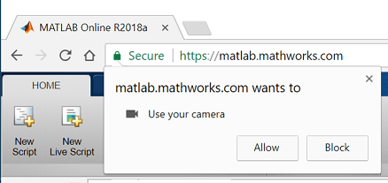
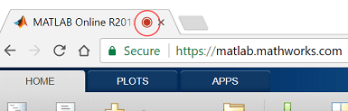

You can access your webcam to stream images in MATLAB® Online™. All the functions in the MATLAB Support Package for USB Webcams are available in MATLAB Online.
Google Chrome™
Open a MATLAB Online session at https://matlab.mathworks.com.
Run webcamlist to list all connected
webcams, and give your browser permission to access your camera when prompted to do
so.

Acquire live images from your camera in MATLAB
Online by following the steps outlined in Acquire Images from Webcams. If you have multiple webcams connected, you can create a webcam
object for only one at a time.
When you create the webcam object in MATLAB
Online, only the following properties are available.
cam = webcam('Logitech')
cam =
webcam with properties:
Name: 'Logitech Webcam 250'
AvailableResolutions: {'640x480'}
Resolution: '640x480'MATLAB
Online supports only the ability to read the Name,
AvailableResolutions, and Resolution webcam
properties. The default resolution of the camera is the only Resolution
currently available in MATLAB
Online. See Set Properties for Webcam Acquisition for more information about webcam object
properties.
Certain features and settings help keep you in control of your privacy. To check if your camera or microphone is in use at any time, look for these indicators:
A small icon appears on the tab in your browser window, notifying you while the camera or microphone is in use.

A visual indicator, such as a light, may be built in to your webcam to inform you when it is in use. Consult the documentation for your webcam to determine if there are any such features.
You can also adjust your browser settings to mitigate security risks. To reduce the likelihood of unwanted applications using your camera or microphone, turn off automatic access to your webcam device. Use the browser settings for Google Chrome to revoke access for specific sites after you have initially allowed access. You can change these settings at anytime. After granting permission to a website once, your browser may be able to access your camera or microphone automatically for that site on future visits.
You can also access the MATLAB
Online website using the private browsing mode in
Google Chrome
. Doing so will automatically ask you for permission to access your camera every time
you open the MATLAB
Online site and run webcamlist, regardless of your browser
settings.
If you receive an error indicating that webcams could not be detected:
Check that your webcam is properly connected to the computer. If it is a USB webcam, you can try disconnecting and reconnecting it.
Make sure that you have given your browser permission to access your webcam. If
the pop-up dialog box does not appear after running webcamlist or
if you blocked permissions, follow the instructions for
Google Chrome
to allow the MATLAB
Online website access to the camera.
Make sure that your camera is not being used by another website or another application.
Run webcamlist again.